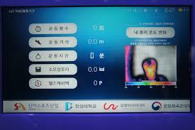
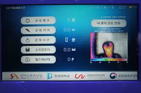
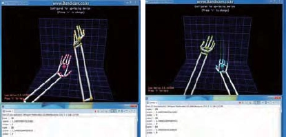
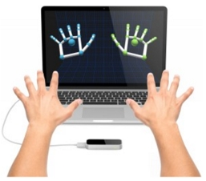

시스템 구성
IT 융합형 스마트 야외체육기구는 태양광 에너지로 동작하며, 사용자 운동량을 측정하여 제공하고 이동통신망을 통해 서버에 저장한 후 사용자의 스마트폰으로 자신의 운동 이력 정보를 조회할 수 있다. 운동량에 따른 포인트를 적립하여 공공건강관리 등에 활용할 수 있는 헬스캐쉬백서비스를 제공한다. 또한, 미세먼지수준 및 날씨정보를 제공하며, 위급상황버튼을 제공한다.시스템 구현
IT 융합형 스마트 야외체육기구 개발 환경은 라즈베리파이3, 10인치 LCD 모니터와 각종 센서(조도센서, 적외선거리측정센서, 운동횟수 측정센서 등)로 구성되며, 운영체제는 라즈비안을 사용 중이며, 개발언어는 파이썬을 활용하고 있다. 시제품은 다양한 야외체육기구 중 달리기, 몸통돌리기, 구름걷기에 적용하고 있다. 그림 3은 개발 중인스마트 야외체육기구 10인치 모니터에 출력되는 화면의예이다. 운동횟수, 운동거리, 운동시간, 소모칼로리, 헬스캐쉬백 포인트, 날짜및시간, 날씨/온도 정보와 함께 사용자의 상반신에 대한 열화상을 제공한다. 또한, 사용자가 운동을 시작하거나 끝내는 시점, 미세머지 수준에 따라 적절한 음성 안내 메시지를 출력한다.IoT야외체육기구 논문 보기
립모션을 수화통역기


립모션 수화통역기 논문 보기
시스템 구성
립모션 수화통역기는 립모션 컨트롤러를 사용하며, 사용자의 손동작을 인식해서 데이터를 추출한다. 추출된 데이터를 가지고 어떤 수화인지 예측하여 GUI에 텍스트 형식으로 출력한다. 수화는 정적인 지화와 동적인 수화로 나뉘어져 있으며 두 가지를 구분하여 출력한다.시스템 구현
지화/수화를 인식 및 통역 프로그램인 HandsTalk은 PC 기반하에서 립모션을 활용하여 JAVA로 개발되었고, PC 및 태블릿 해상도에 맞춰 GUI를 구성하였다. 수화통역기는 인식되는 손의 모양을 확인할 수 있는 프레임과 수화가 인식되면 한글로 변환하여 출력해주는 프레임, 그리고 유사도가 높은 단어들을 제시해주는 프레임으로 구성된다. 이 프로그램에는 자음, 모음을 조합해주는 한글 오타마타 기능, 수화 문장 출력 기능, 추천단어 선택 기능, 제스쳐 기능, 손 모양 시각화 기능이 포함되어 있다.립모션 수화통역기 논문 보기